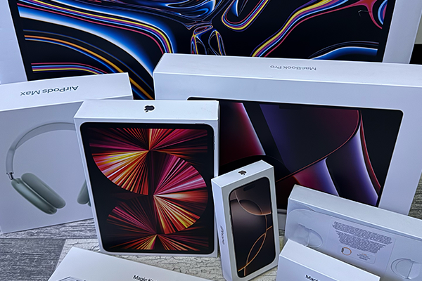
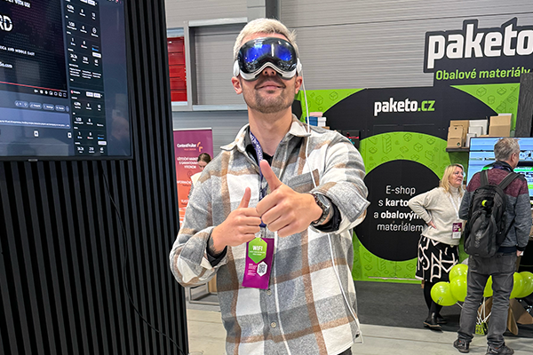

Why Apple? Products That Influence My Work Every Day ▮▪
I’ve had this article in mind for quite some time. I’ve been using Apple products for years, and I’ll never forget what it felt like to hold my very first iPhone 3G. Since then, technology has advanced tremendously, and today I do all my work exclusively on Apple devices. Why? Has Apple become a lifestyle brand? What are its biggest advantages? You’ll find out all of that in today’s article.
Today, I can’t imagine working with any other system than Apple’s. I use a 16-inch MacBook Pro with the M2 Pro chip, and it’s an absolute beast when it comes to video editing. When I tried rendering the same project on a gaming PC with Windows, the difference was striking. While the 4K render on my MacBook took just a few minutes, on the PC it took nearly half an hour. Apple’s chips, which replaced Intel, are simply in a league of their own. Everything runs fast, smoothly, and most importantly reliably. My Mac handles 10-bit 4K video at 100 FPS without a problem, even when I have Photoshop, Premiere, and After Effects open at the same time. So far, I haven’t come across a single task this model couldn’t handle.
One of Apple’s biggest advantages is its ecosystem. Once I start working on my Mac, I can seamlessly continue on my iPad Pro, which is incredibly lightweight a big plus, since a MacBook of this size can get pretty heavy to carry around. The connection between all Apple devices is truly invaluable. No matter where you start working, you can pick up right where you left off on another device without missing a beat.
At first, I wasn’t sure if getting an iPad Pro would really be worth it, but now I can’t imagine being without it. It’s perfect for emails, office work, and overall project management. The only downside, in my opinion, is that the iPad runs on iPadOS, which lacks some of the capabilities macOS offers. Still, I understand why Apple keeps these systems separate once you figure out the ideal purpose for each device, your workflow becomes much smoother.
The Apple Studio Display is another product I’ve completely fallen in love with. I actually wrote a full review about it earlier. Some might call it overpriced, but for me, it’s the best display for professional work. Why? You can find all the details in that dedicated review, where I broke everything down.
And what about the iPhone?
Right now, I’m using the iPhone 16 Pro, which I upgraded to after a year with the iPhone 15 Pro Max. At first glance, they look almost identical, but the camera improvements were enough to convince me as someone who creates video content to make the switch. We might not be seeing revolutionary upgrades every year anymore, but for me, the advancements in camera technology are reason enough to test it out. I’m especially excited to try it at the League of Legends WORLDS finals it’s going to generate a ton of great content, so stay tuned to my website and socials!

The iPhone wouldn’t be complete without the Apple Watch. I’m using the Ultra model and I absolutely love it even though I sometimes forget to charge it :D. Its ability to measure just about everything is incredible, and the Ultra’s design finally won me over compared to the standard model, which I never really liked. I even made use of its features during a trip to Switzerland, where we hiked with a breathtaking view of Mont Blanc. At an altitude of almost 3,900 meters, you can definitely feel it. I track all my sports activities with the watch, and its integration with the iPhone is another amazing bonus.
Lastly, I have to mention the AirPods Pro Max. Some people might call them “ugly,” but for me, they were an instant yes. The sound quality is top-tier, and the noise cancellation is absolutely phenomenal. When I want to work in peace, I just put them on and I’m in my own world. At the same time, I can switch modes and stay aware of what’s happening around me when needed. In that sense, I also see the AirPods Pro Max as a lifestyle accessory one I wouldn’t easily trade for any other headphones.
Whether it’s the MacBook, iPad, iPhone, or AirPods, Apple is a reliable partner for me. Thanks to the seamless integration between devices, I can work more efficiently, quickly, and comfortably. And what’s next? I can’t wait to test the Apple Vision Pro, which I’ve already had the chance to try briefly in the past.
If I were to break down each device individually, this article would have many more pages. In the future, I’ll cover each product in a separate post, explore their advantages, and take a closer look at all the details.
Follow me on my social media and website so you don’t miss any new articles.
See you next time,
Štefan
◀ Back to blog